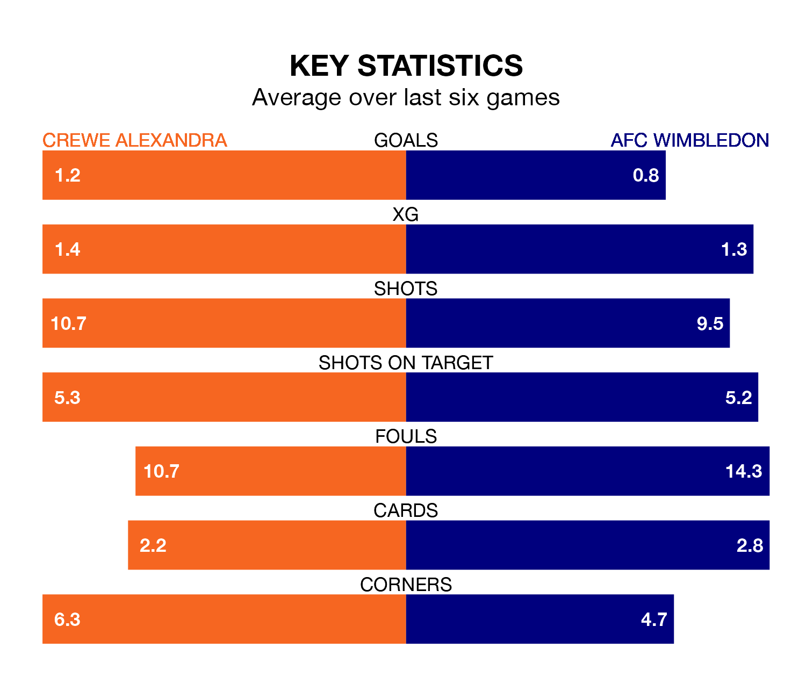

Crewe Alexandra host AFC Wimbledon on Saturday at the Mornflake Stadium in EFL League Two.
In their last league match, on March 16, Crewe lost to Milton Keynes Dons 3-1 away, with their goal scored by Elliot Nevitt.
Wimbledon also lost, 2-0 at home against Newport County.
In Alex Bass, Wimbledon can rely on one of the league's safest pair of hands. He has kept 15 clean sheets in his 39 appearances this season, and no 'keeper has prevented the opposition scoring more often in EFL League Two.
In Crewe's net, Harvey Davies has seven clean sheets in 27 games. He has conceded a goal every 68 minutes, 30% more often than the 90 minutes between goals for Bass.
With 66 goals in 38 games so far this season, the Railwaymen are scoring more than average in the league with 1.7 goals per game. And they are conceding fewer than average, letting in 54 goals at a rate of 1.4 per game.
The Dons, meanwhile, are below average scorers, with 1.3 goals per game, compared to a league average of 1.5. They have conceded 1.1 goals per game.
In the last 10 years, Crewe and Wimbledon have played each other on seven occasions. Crewe won two of them, Wimbledon one, and they drew four times.
On average, the Railwaymen scored 1.6 goals and the Dons 1.3 in those matches.
Their last meeting was on September 16, when they played out a 2-2 draw.
The home side are fifth in the table after 38 games, of which they have won 18 and drawn 10, earning 64 points.
The visitors are two places behind Crewe in seventh, with 15 wins and 12 draws putting them on 57 points.
Crewe are in mixed form in EFL League Two, with two wins and a draw from their last six games.
With three wins and a draw over that period, Wimbledon's form is better – they have taken 10 points from 18, compared to the Railwaymen's seven.
Saturday's match will be refereed by Darren Drysdale, who has taken charge of 12 EFL League Two games so far this season, issuing one red card and booking 46 players. He has awarded five penalties.
The last Crewe game Drysdale refereed was a 1-0 away loss to Bradford City on August 26. His last Wimbledon match was their 1-1 draw at home against Wrexham on August 12.
Updated: 10:19 (UTC), 22/03/24